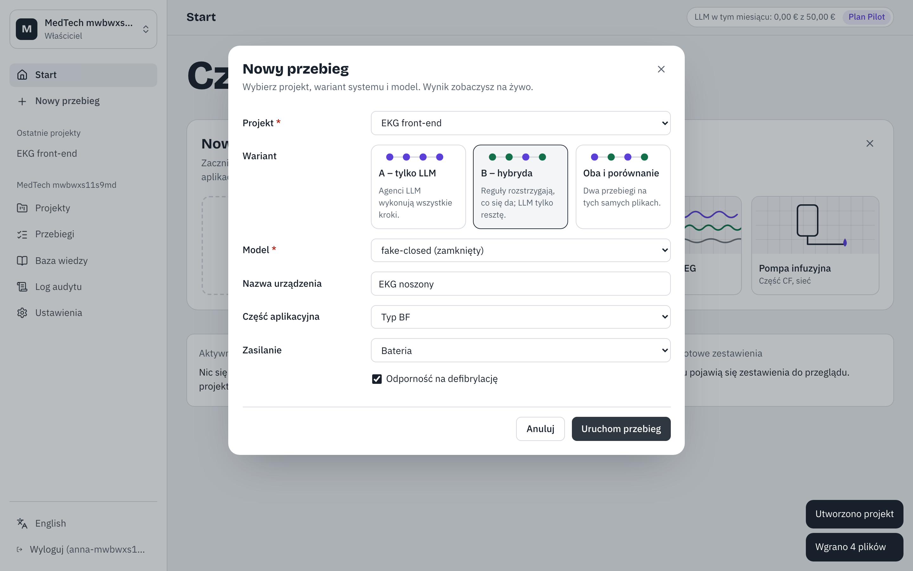
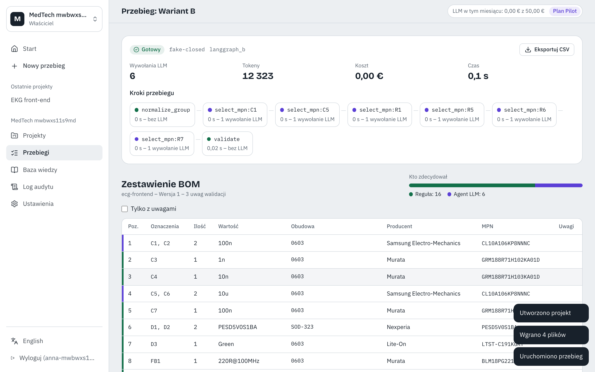
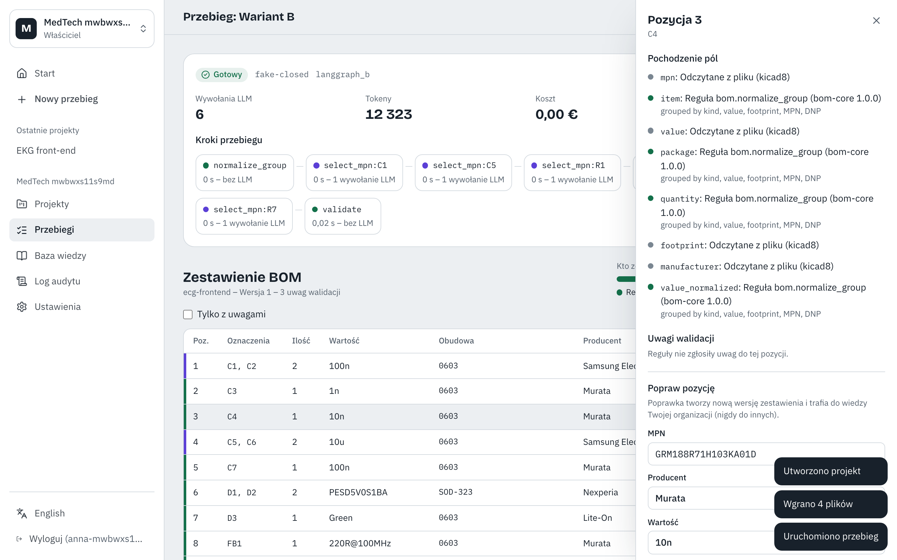
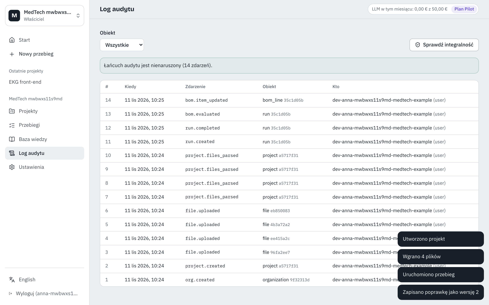

Temat: System wieloagentowy LLM a system hybrydowy do generowania zestawień materiałowych (BOM) urządzeń biomedycznych Autor: Bartosz Malinowski, PG WETI · Stan na: 11 listopada 2026
1. Cel i pytanie badawcze
Praca porównuje dwa warianty generowania i walidacji BOM z plików projektowych (KiCad, PDF, DXF i inne):
Wariant A – 100% LLM: agenci LLM wykonują całość: ekstrakcję, dobór numerów części (MPN), walidację i kompozycję zestawienia.
Wariant B – hybryda: deterministyczne reguły (parsowanie, normalizacja, grupowanie, walidacja, w tym flagi IEC 60601) oraz agent LLM z wyszukiwaniem w bazie wiedzy (RAG) tylko dla pozycji nierozstrzygniętych przez reguły.
Porównanie obejmuje jakość (precyzja, czułość i F1 pozycji, dokładność pól, halucynacje MPN), skuteczność walidacji na wstrzykniętych błędach, powtarzalność, koszt i czas. Do istotności statystycznej służą test permutacyjny par (jednostką jest projekt) i bootstrap z 95% przedziałem ufności.
2. Co jest zrobione
Oba warianty działają w ramach jednej platformy, która jest zarazem stanowiskiem badawczym i prototypem produktu SaaS (wielu klientów, dane w UE, pełny audyt). Główne elementy:
Obszar
Stan
Rdzeń domenowy: model BOM z pochodzeniem każdego pola, normalizacja, reguły walidacji, metryki oceny
gotowe, przetestowane
Parsery formatów: KiCad 6–9, CSV, IPC-2581, EDIF, ODB++, listy części DXF, tabele BOM w PDF
gotowe
Baza wiedzy (datasheety): wyszukiwanie hybrydowe wektorowe + pełnotekstowe, izolacja per organizacja
gotowe
Agenci LLM: wariant A i B (LangGraph), adapter Claude Agent SDK, budżety tokenów, wersjonowane prompty
gotowe
Aplikacja webowa i API: projekty, przebiegi na żywo, BOM z pochodzeniem, poprawki, porównanie A/B, log audytu
gotowe
Narzędzie eksperymentu: macierz wariant × model × projekt × powtórzenia, statystyka, wykresy i tabele do rozdziału 7
gotowe; brak danych do pełnego eksperymentu
Infrastruktura chmurowa (AWS, region UE) jako kod
gotowa, niewdrożona
Jakość kodu: ok. 420 testów automatycznych (jednostkowe, integracyjne, izolacji danych między organizacjami, kontraktowe, E2E z kontrolą dostępności WCAG 2.2 AA). Pokrycie kodu: 97% w pakietach domenowych i 90% w serwisach.
3. Jak to wygląda

Rys. 1. Uruchomienie przebiegu: wybór szablonu urządzenia (EKG noszony), projektu i wariantu (A, B lub oba).

Rys. 2. Wynik wariantu B: kroki przebiegu (reguły bez LLM i wywołania agenta), liczba wywołań i tokenów, zestawienie BOM oraz pasek „kto zdecydował” (reguła albo agent LLM).

Rys. 3. Pochodzenie każdego pola pozycji BOM (odczyt z pliku, reguła z wersją, agent z cytatem z bazy wiedzy) i ręczna poprawka, która tworzy nową wersję zestawienia.

Rys. 4. Log audytu z łańcuchem skrótów i weryfikacją integralności.
Uwaga do zrzutów: demo działa na atrapie modelu LLM, więc liczby na zrzutach pokazują działanie systemu, a nie wyniki badawcze. Pomiary na prawdziwych modelach wykonam po skompletowaniu zbioru ewaluacyjnego (punkt 4).
4. Następne kroki
Zbiór ewaluacyjny: co najmniej 6 otwartych projektów urządzeń biomedycznych w KiCad (na licencjach otwartych) z ręcznie zweryfikowanymi BOM referencyjnymi. Przy 6 projektach test permutacyjny pozwala osiągnąć p = 0,031; przy 3 tylko 0,25.
Dostęp do modeli w UE: modele zamknięte (Anthropic przez AWS Bedrock w Frankfurcie, OpenAI przez Azure EU) i otwarte (open-weight), a następnie pełny eksperyment A vs B.
Pisanie: rozdział z wynikami (wykresy i tabele generuje narzędzie eksperymentu) oraz dyskusja kompromisu jakość/koszt/audytowalność między wariantami.
Chętnie omówię na konsultacjach dobór projektów do zbioru ewaluacyjnego i zakres porównania modeli.